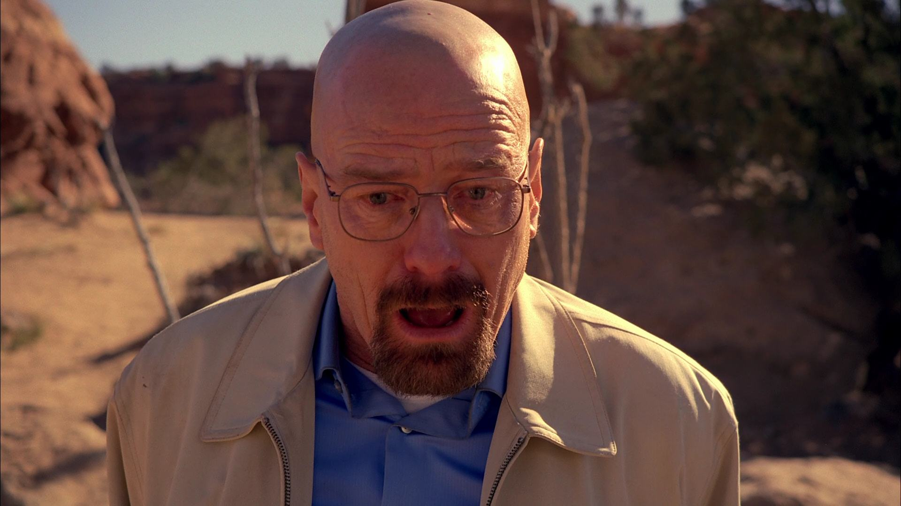
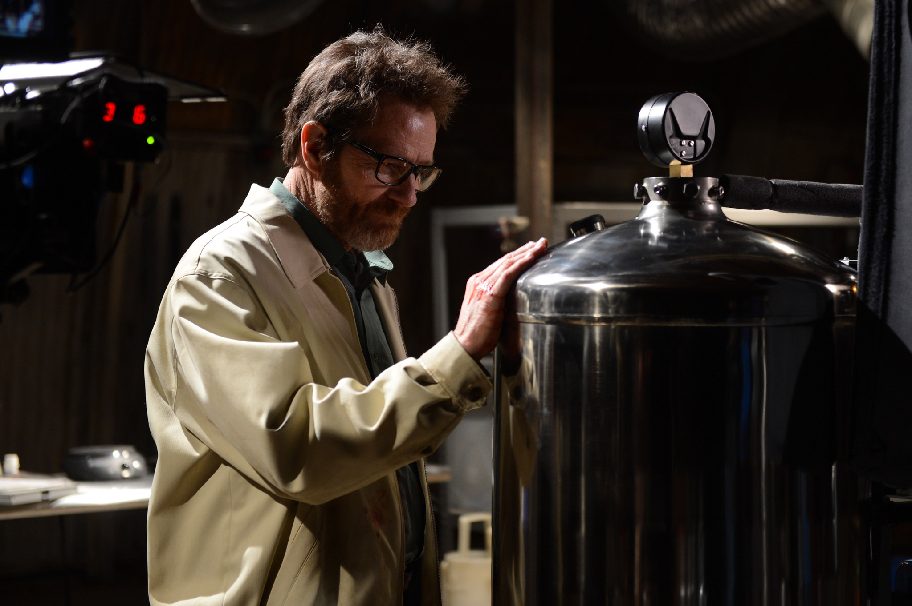
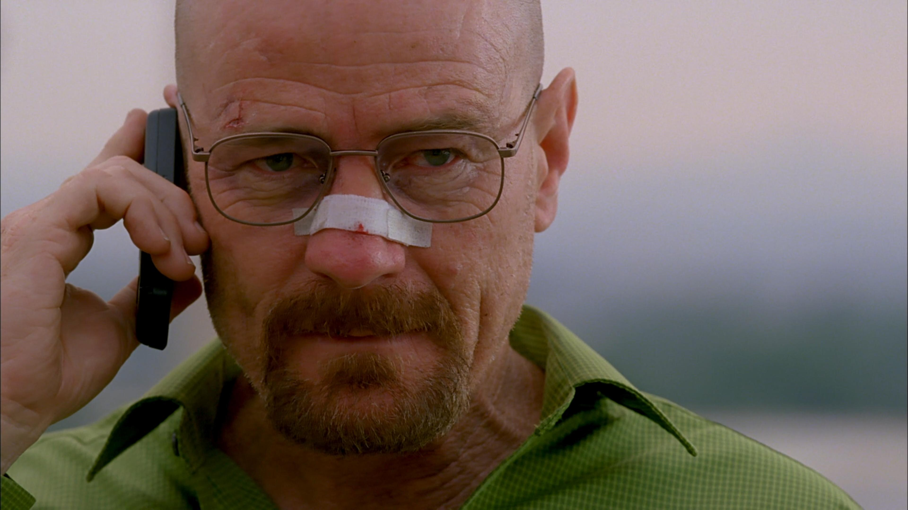
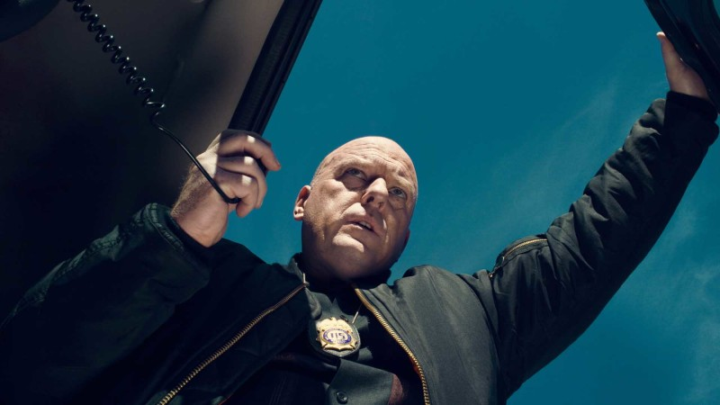

Piloto
El comienzo de todo. Este episodio nos presenta a los personajes principales y sienta las bases para una historia intensa y transformadora.

El comienzo de todo. Este episodio nos presenta a los personajes principales y sienta las bases para una historia intensa y transformadora.
Considerado por muchos como el mejor episodio de toda la serie. Un capítulo cargado de tensión emocional y momentos decisivos.
El gran cierre de la serie. Un final cuidadosamente construido que brinda resolución y deja huella en los fanáticos.
Uno de los episodios más impactantes por su intensidad creciente y su inolvidable escena final.

Un capítulo clave que cambia el curso de la historia. Cierre magistral de una temporada llena de conflictos.
Reconocido por una de las secuencias más tensas de toda la serie. Una clase maestra en suspenso y dirección.
